-
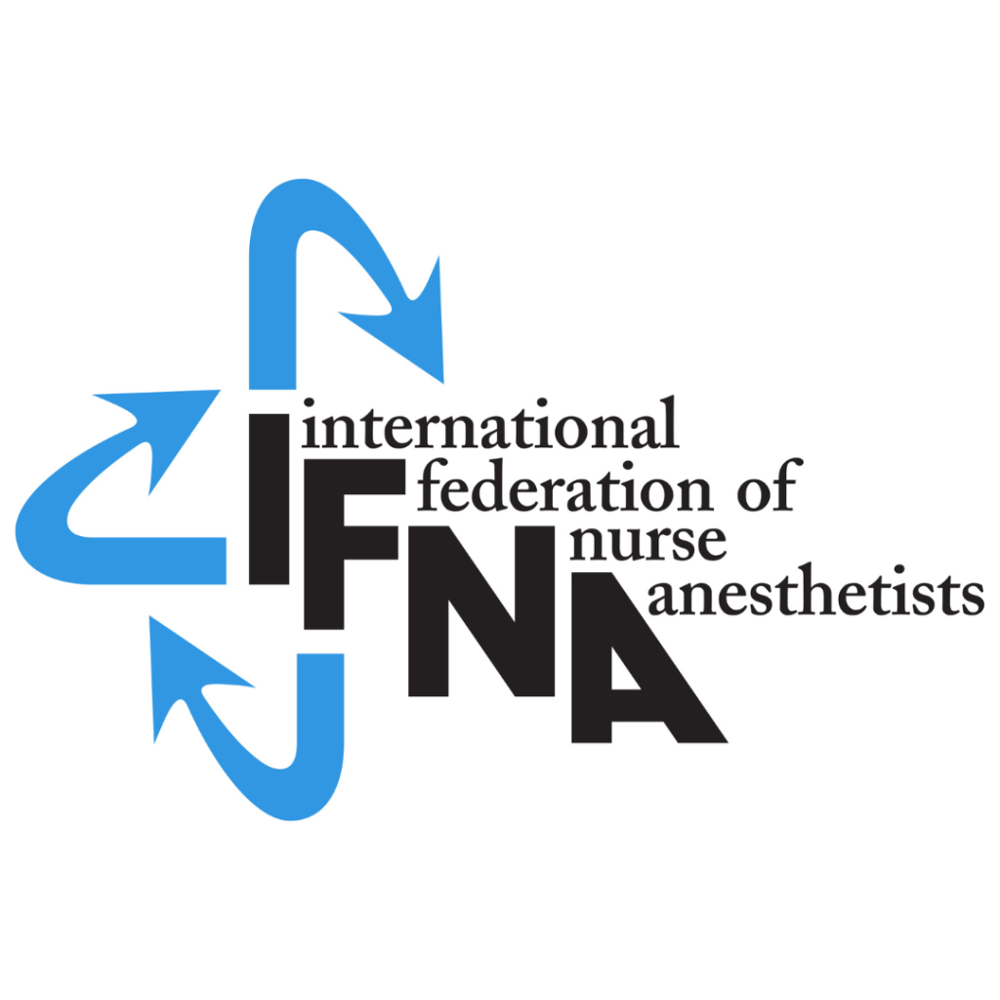
IFNA — International Federation of Nurse Anaesthetists
BARNA has been the official UK representative since 1995, and hosted the 2016 World Congress in Glasgow. Visit site →
-
ICPAN — International Collaboration of PeriAnaesthesia Nurses
BARNA helped found ICPAN in 2011; Isabel Diez-Martin serves as BARNA's ICPAN Global Advisory Committee member. Visit site →
-
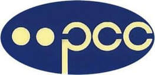
PCC — Perioperative Care Collaborative
BARNA has been an official partner since PCC's inception in 2002, working across professional bodies on perioperative position statements.
-
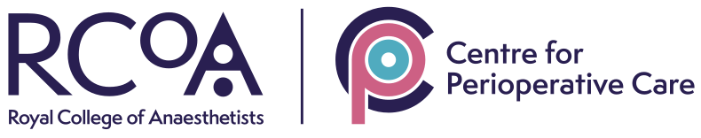
CPOC — Centre for Perioperative Care
Formed by the Royal College of Anaesthetists in 2019 to advance perioperative care for patients across the surgical journey. Visit site →
-
NICE
BARNA contributes to NICE's Perioperative Care guideline. Visit site →
-
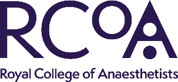
RCoA — Royal College of Anaesthetists
BARNA contributes to the RCoA's GPAS chapters. Visit site →
-
FICM
BARNA contributes to FICM's Enhanced Perioperative Care guidance. Visit site →
-
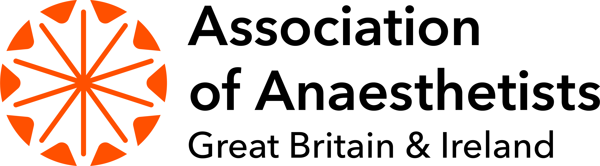
Association of Anaesthetists (formerly AAGBI)
Co-produced the UK National Core Curriculum for Post-Anaesthesia Care with BARNA, published 2013. Visit site →
-
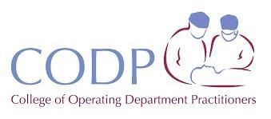
CODP — College of Operating Department Practitioners
BARNA held a joint conference with CODP on Ethics and Law at the University of Surrey in 1999. Visit site →
-
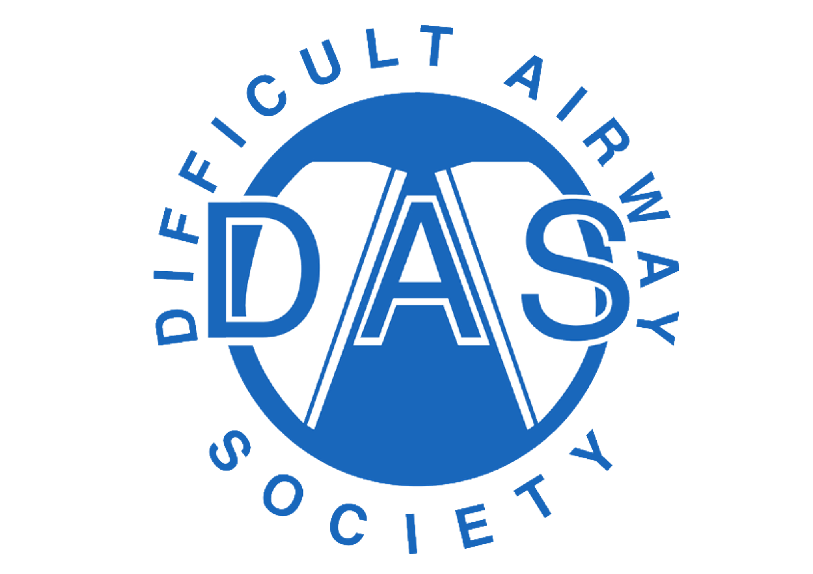
DAS — Difficult Airway Society
A key resource for airway management guidance in anaesthesia. Visit site →
-
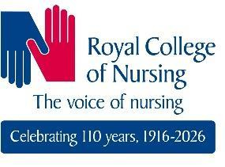
RCN — Royal College of Nursing
BARNA has worked with the RCN across the years and hosted 'BARNA Talks: Revalidation' at the RCN in 2016. Visit site →
-
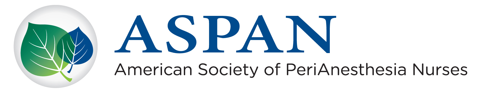
ASPAN — American Society of PeriAnesthesia Nurses
BARNA has enjoyed a close relationship with ASPAN for many years; ASPAN's Immediate Past President traditionally attends the BARNA conference. One of the four founding societies of ICPAN. Visit site →
-
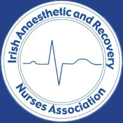
IARNA — Irish Anaesthetic and Recovery Nurses Association
BARNA's sister organisation in Ireland, founded 2002. BARNA supports and attends IARNA's conferences, and vice versa. Also one of the four founding societies of ICPAN. Visit site →
-
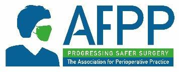
AFPP — Association for Perioperative Practice
The UK's leading membership body for theatre practitioners, founded 1964. Co-signatory alongside BARNA on the 2026 Corridor Care Joint Statement. Visit site →